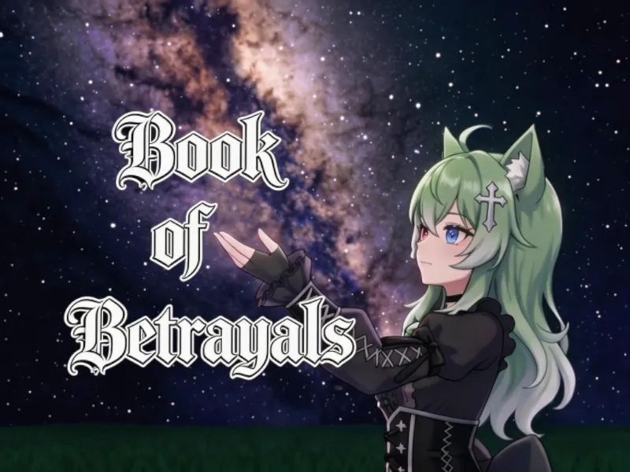

星辉落系列 · VRChat 可读
「不要找砂糖」。上篇已完结——219 篇单元剧,约七万字,可乱序阅读。

单元剧格式的长故事,一篇一个切面。上篇已完结,随时可以开始。
不用从头啃。随便点开一篇,都能读进去,都自成一段完整的心事。
记录一场真实的情感变故——背叛别人,也被人背叛。主要角色:地雷系、回避系、黏人系。
在 VRChat 群组搜索 NOSGR 加入。数十个读者仔细读完了,反馈很深,正面的和负面的都有。
整本书做成了 VRChat 世界。戴上头显,找个安静的角落,慢慢读。
这句话是这本书的题眼。读完你会明白它是什么意思。
🤔
← 回作品集看全部作品